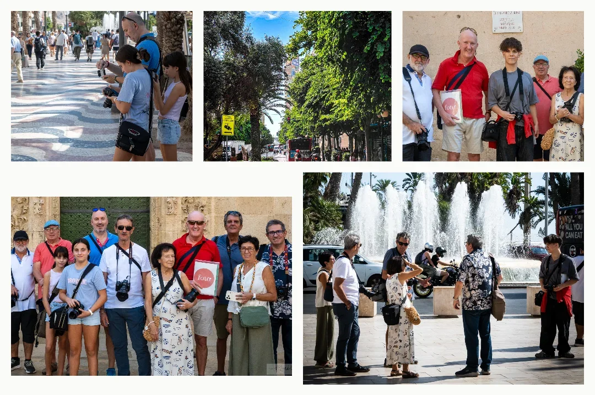

Foto Walk 2026 — Alicante
ALICANTE CITY CENTRE HOSTS SUCCESSFUL FOTO WALK 2026
On the first Saturday morning of this autumn, before the sun climbed too high and the shadows got too sharp, my photography club colleague Lev and I met our group of photographers in the Mercado area of Alicante. This was the second global edition of the Foto Walk, which debuted in 2025 and brought together more than a thousand photographers in cities from Nashville to Glasgow to Paris. This time, the event comprised more than 100 walks worldwide — Alicante included.
Dressed in matching red (Foto's brand colour) so the dozen or so participants could spot us, we talked through the plan and led our group away from the flower stalls, down the Rambla and down Calle Tomás López Torregrosa. There, the strong lines of the tall buildings and the Mediterranean sunlight reflecting off the pavement had cameras clicking straight away. We regrouped briefly at Plaza de San Cristóbal before slipping into the narrow cobbled streets of Alicante's old quarter.
Our longest stop was at Plaza del Abad Penalva, next to the Concatedral de San Nicolás — a spot with excellent light for stone textures, archways and courtyard shadows, and a natural place to grab a drink and compare shots. This pedestrian area is a fantastic location for budding and veteran street photographers alike! After some group photos, we threaded our way through the labyrinth of lanes to Plaza de la Santísima Faz, where the palm trees threw long, broken shadows across the square.
Next came the spectacular entrance through the stone archway into Plaza del Ayuntamiento for a few natural-frame and puddle-reflection shots. Finally, we wrapped up under the palms on the picturesque, traffic-free Explanada de España, with its iconic wave-patterned mosaic walkway.
Everyone made the most of a few more photographic opportunities before some of us stopped for a drink and a chat in an air-conditioned local café-bar. All told: brilliant light, good company, and the kind of conversation that only happens among people who stop mid-sentence because they've spotted the same shadow you have.
If you were there, we would really appreciate it if you could do the following:
- Foto app: Download the Foto app (fotoapp.co) or get it on Google Play, upload your walk photos, and add the in-app tag 'Photo Walk' so other members can see our Alicante captures.
- Instagram: If you post on Instagram, tag @thefotoapp and use the hashtag #FotoWalk so the global Foto team can reshare our stories.
Also, please share your photos from the walk in one of the following ways:
- Use the contact details shown in the card (image) on this contact page.
- On that same page, send a message using the contact form. Include a link (URL) to your photos (e.g. Google Photos, WeTransfer, Dropbox or your usual storage service).
- If you have a Google account, add your pictures directly to the shared Google Photos album you have been invited to.
A big thank you to all the friendly participants — and, above all, to Michael (CEO of Foto) and the small team behind the now-familiar red logo of this maturing startup, both for the brilliant idea and for trusting us to host the 2026 event here on the sunny Costa Blanca.
A photo gallery will follow shortly.
In the meantime, here is a photo collage featuring highlights from the route:
